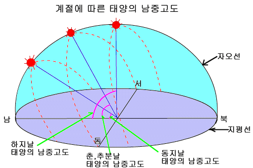

동양과 서양을 막론하고 고대부터 하루의 시작은 까만 밤인 자정을 기준으로 하였다.
자정을 0 시로 결정한 것이다.
그렇다면 자정은 어떻게 알 수 있었을까?
밤에 볼 수 있는 것은 달과 별. 달은 지구 주위를 공전하기 때문에 매일 밤 자정에 관측하더라도 항상 다른 위치에 있다. 별도 마찬가지다. 지구가 태양 주위를 공전하기 때문에 늘 다른 위치에서 관측된다.
이것은 고대가 아닌 현재에도 마찬가지다. 자정을 알리는 기준이 될만한 무언가는 전혀 없다.
당신이 만약 한밤중에 잠에서 깬다면 시계 없이 지금이 자정인지 알 수 있을까?
여기에는 '어떻게' 와 '어째서' 가 공존한다.
어떻게 고대인들은 아무런 관측기준도 없는 자정을 알 수 있었을까?
어째서 고대인들은 이렇게 구분하기도 모호한 자정을 하루의 시작으로 삼았을까?
두가지 대답 모두 간단하고 누구나 추측 가능한 것들이다.
어떻게?
하루 중 가장 정확한 관측이 가능한 시점은 '정오' 다. 태양이 정남쪽에 위치하면 (이것을 남중했다고 말한다) 정오인 것이다. 이건 계절과 무관하다. 그렇다면 이 '정오' 를 기준으로 하루의 시작을 알리는게 적절할 것이다. 정확하니까.
어째서?
하지만 멀건 대낮에 날짜가 바뀐다는건 아무래도 어색하다. 기왕이면 사람들이 잠든 사이에 날짜가 바뀌는것이 여러가지 면에서 편리한 것이 사실이다. 그래서 정오에 정 반대가 되는 시점인 '자정' 을 정하고 정오부터 자정까지를 12등분하여 정오를 12시로 정하게 되었다. (동양에서는 자정부터 다음날 자정까지를 12등분하여 하루를 12시간으로 정하게 되었다)
내 의견이 아니고 사실이다.
그냥 생각나서 적어봤다.